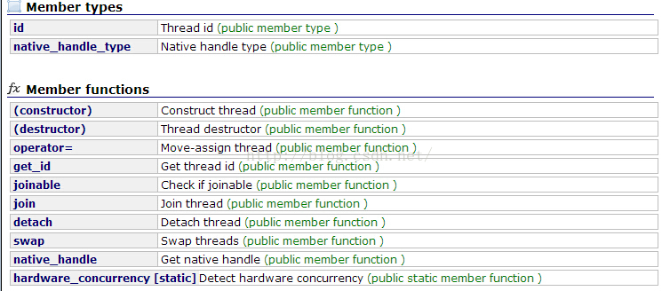
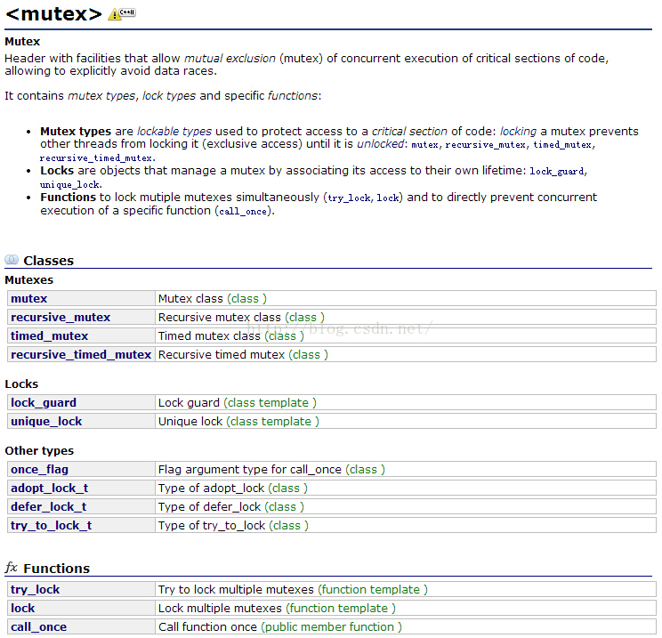

1. 前言 线程池是一般服务端或者客户端编程经常要用到的一种管理线程的类，从网上找到一个比较好的线程池实现，主要运用C++11。记录一下理解过程，帮助学习线程池和C++11。
2. 代码 2.1 先上代码 threadPool.hpp
1 2 3 4 5 6 7 8 9 10 11 12 13 14 15 16 17 18 19 20 21 22 23 24 25 26 27 28 29 30 31 32 33 34 35 36 37 38 39 40 41 42 43 44 45 46 47 48 49 50 51 52 53 54 55 56 57 58 59 60 61 62 63 64 #ifndef THREAD_POOL_H #define THREAD_POOL_H #include <atomic> #include <condition_variable> #include <functional> #include <future> #include <mutex> #include <queue> #include <string> #include <thread> #include <vector> class threadPool { using Task = std::function<void (void )>; private : std::vector<std::thread> m_pool; std::atomic<int > m_idleThreadNum; std::atomic<bool > m_stoped; std::mutex m_lock; std::queue<Task> m_tasks; std::condition_variable m_cv; int m_threadNum = 0 ; std::string m_poolName; void run () public : threadPool () : m_stoped (true ) {} ~threadPool (); template <class F , class ... Args> auto commit (F &&f, Args &&... args) -> std::future<decltype (f(args...)) > using RetType = decltype (f (args...)); if (m_stoped) { return std::future <RetType>(); } auto task = std::make_shared<std::packaged_task<RetType ()>>( std::bind (std::forward<F>(f), std::forward<Args>(args)...)); auto ret = task->get_future (); { std::lock_guard<std::mutex> lock (m_lock) ; m_tasks.emplace ([task] { (*task)(); }); } m_cv.notify_one (); return ret; } virtual void init (int threadNum, std::string name = "ThreadPool" ) }; #endif
threadPool.cpp
1 2 3 4 5 6 7 8 9 10 11 12 13 14 15 16 17 18 19 20 21 22 23 24 25 26 27 28 29 30 31 32 33 34 35 36 37 38 39 40 41 42 43 44 45 46 47 48 49 50 51 52 53 54 55 56 57 58 59 60 61 62 63 #include "threadPool.hpp" #include "log.hpp" using namespace std;threadPool::~threadPool () { m_stoped = true ; m_cv.notify_all (); for (auto &tmp : m_pool) { if (tmp.joinable ()) tmp.join (); } } void threadPool::init (int threadNum, string name) if (!m_stoped) { LOG_INFO ("%s has been started, thread num %d" , m_poolName.c_str (), m_threadNum); return ; } { unique_lock<mutex> lock (m_lock) ; if (!m_stoped) { return ; } m_stoped = false ; m_pool.clear (); for (int i = 0 ; i < threadNum; i++) { m_pool.emplace_back (thread (&threadPool::run, this )); } m_threadNum = threadNum; m_poolName = name; } LOG_INFO ("%s start thread num %d" , m_poolName.c_str (), m_threadNum); } void threadPool::run () while (true ) { m_idleThreadNum--; Task task; { unique_lock<mutex> lock (m_lock) ; m_cv.wait (lock, [this ] { return m_stoped || !(m_tasks.empty ()); }); if (m_tasks.empty ()) { return ; } task = move (m_tasks.front ()); m_tasks.pop (); } LOG_DEBUG ("Handle one task" ); task (); m_idleThreadNum++; } }
2.2. 实际应用示例 多线程实现从1累加到10000，使用原子变量实现线程同步
1 2 3 4 5 6 7 8 9 10 11 12 13 14 15 16 17 18 19 20 21 22 23 24 25 26 27 28 29 30 31 32 33 34 35 36 37 38 39 40 41 42 43 44 45 46 47 48 49 50 #include "baseInstance.hpp" #include "threadPool.hpp" #include "log.hpp" #include <atomic> #include <vector> #include <future> using namespace std;class testPool : public threadPool, public BaseInstance<testPool> { public : void init (int threadNum) init (threadNum, "testPool" ); } }; atomic<int > addNum; atomic<int > result; int test () int add = 0 ; while (true ) { add = addNum++; if (add > 10000 ) { return add; } result += add; } } int main (int argC, char *arg[]) LOG_DEBUG ("Hello" ); testPool &pool = testPool::getInstance (); pool.init (5 ); vector<future<int >> ret; for (int i = 0 ; i < 20 ; i++) { ret.emplace_back (pool.commit (test)); } for (auto &tmp : ret) { tmp.wait (); } LOG_DEBUG ("End, result %d" , result.load ()); return 0 ; }
3. 详解 乍一看很复杂，但是实现的功能却很强大，支持传入任意参数的任务函数。获取线程结果使用wait函数，充分运用C++11的各种新特性future、atomic（用来不加锁）、condition_variable等。
3.1. 类的结构 1 2 3 4 5 6 7 8 9 10 11 12 13 14 15 16 17 18 19 20 21 22 23 24 25 26 27 28 29 30 31 32 33 34 35 36 37 38 39 40 41 42 43 class threadPool { using Task = std::function<void (void )>; private : std::vector<std::thread> m_pool; std::atomic<int > m_idleThreadNum; std::atomic<bool > m_stoped; std::mutex m_lock; std::queue<Task> m_tasks; std::condition_variable m_cv; int m_threadNum = 0 ; std::string m_poolName; void run () public : threadPool () : m_stoped (true ) {} ~threadPool (); template <class F , class ... Args> auto commit (F &&f, Args &&... args) -> std::future<decltype (f(args...)) > using RetType = decltype (f (args...)); if (m_stoped) { return std::future <RetType>(); } auto task = std::make_shared<std::packaged_task<RetType ()>>( std::bind (std::forward<F>(f), std::forward<Args>(args)...)); auto ret = task->get_future (); { std::lock_guard<std::mutex> lock (m_lock) ; m_tasks.emplace ([task] { (*task)(); }); } m_cv.notify_one (); return ret; } virtual void init (int threadNum, std::string name = "ThreadPool" ) };
参数列表 使用一个vector存放各个线程，这个是真正意义上的池，线程使用c++的thread类 空闲线程数量和是否要停止线程标记，由于操作比较频繁，加锁会造成资源浪费，使用C++的atomic类定义原子变量 线程池的操作肯定是要加锁的，要用mutex。这个锁同时被用于控制线程，和condition_variable联合用。 外部传入的任务分发给线程池来做，这里就需要有一个任务队列，队列自然使用C++的queue，任务使用C++的function类定义一个void xxx(void)函数，为什么这样后面再解析 主要对线程的操作用到了condition_variable类，这里划重点，需要仔细理解，后面详解记得关注 线程总数和线程名字，纯属用来记录使用，内部打印线程池名称和线程数量使用 函数列表 构造函数很简单，只初始化了一个m_stoped变量，由于是原子变量，只能在初始化赋值，不能写到定义中。 线程执行函数为内部的void run();，后面会讲解具体实现，这个函数用来给thread类用 commit函数用于传入真正的任务，外部操作线程池主要调用commit函数，传入一个任务函数到线程池入参为第一个是函数指针，剩余为可选参数，包括返回类型都由函数指针定义，实现任意函数任意类型的传入和返回。 auto类型的返回在C++11及以前是不支持的，在C++14才允许了auto类型返回值。 当前使用c++11需要在后面加了一个future<decltype(f(args...))>，就是用参数来推断返回值并且转成future类型 使用模板定义F，可以传入任意类型的函数指针，在C++中，函数也认为是一个类 这个定义可以直接实现任意参数和任意返回值的任务函数 模板函数只能在头文件定义，不然编译会报错，所以commit的实现写在了头文件中，具体讲解实现看后文 3.2. 用到的C++11新特性详解 thread 线程类 thread是c++11封装的上层线程类，可以直接创建线程 等待线程退出使用join()函数 不调用join()且线程还没有退出时析构thread，将会出现栈溢出 
示例
1 2 3 4 5 6 7 8 9 10 11 12 13 14 15 16 17 #include <iostream> #include <thread> using namespace std;void th_func () std::cout << "hello thread." << std::endl; } int main (int argc, char *argv[]) std::thread t (th_func) ; t.join (); return 0 ; }
mutex 互斥量，用于加锁 
C++提供的互斥量，一般和线程同时用，类似于C语言的pthread_mutex lock_gard和unique_lock均提供析构时自动解锁，但是unique_lock提供延时加锁等功能，同样时间性能要比lock_guard差点 示例
1 2 3 4 5 6 7 8 9 10 11 12 13 14 15 16 17 18 19 20 21 22 23 24 25 26 27 28 29 30 #include <thread> #include <mutex> #include <vector> #include <iostream> #include <algorithm> std::mutex my_lock; void add (int &num, int &sum) while (true ){ std::lock_guard<std::mutex> lock (my_lock) ; if (num > 100 ){ break ; } sum += num++; } } int main () int sum = 0 ; int num = 0 ; std::vector<std::thread> ver; for (int i = 0 ; i < 20 ; ++i){ std::thread t = std::thread (add, std::ref (num), std::ref (sum)); ver.emplace_back (std::move (t)); } std::for_each(ver.begin (), ver.end (), std::mem_fn (&std::thread::join)); std::cout << sum << std::endl; }
condition_variable 条件变量，线程管理主要用到的类 condition_variable可以实现一种阻塞线程等待条件满足
当前的用法是
1 2 3 4 5 6 7 8 9 10 11 12 13 14 15 16 17 18 void threadPool::run () while (true ) { m_idleThreadNum--; Task task; { unique_lock<mutex> lock (m_lock) ; m_cv.wait (lock, [this ] { return m_stoped || !(m_tasks.empty ()); }); if (m_tasks.empty ()) { return ; } task = move (m_tasks.front ()); m_tasks.pop (); } LOG_DEBUG ("Handle one task" ); task (); m_idleThreadNum++; } }
condition_variable需要和mutex一起用，使用的是mutex的锁特性将线程阻塞。
condition_variable::wait()参数为上述申请的锁，第二个参数可选
执行wait后，前面申请的锁会被释放 如果外部使用相同的condition_variable执行notify_one()，将会使一个执行wait阻塞的线程唤醒，并且去申请锁
如果执行notify_one()时，锁没有释放，被唤醒的线程还是会阻塞，不过是因为锁没有申请到而阻塞的 也就是说执行wait会释放锁，被唤醒后会申请锁
wait第二个参数可选，在wait()之前
future 未来值获取 future
future主要用于进程中异步获取返回值。提前声明变量，在子线程跑的过程，主进程可以处理其他任务，然后通过future获取子线程的各种值 future一般和promise一起用，future单独用主要用于当做返回值 future在析构时，会自动调用wait() promise
使用promise需要注意作用域，如果promise析构了，再使用set_value()会引起线程崩溃 一般promise使用是作为线程同步使用 1) 示例1 等待子进程退出 1 2 3 4 5 6 7 8 9 10 11 12 13 14 15 16 17 18 19 20 21 22 23 24 25 26 27 28 29 30 int test1 (promise<int > &promisObj) sleep (10 ); LOG_DEBUG ("set promise value" ); promisObj.set_value (10 ); sleep (10 ); LOG_DEBUG ("return" ); return 0 ; } int main (int argC, char *arg[]) LOG_DEBUG ("Hello" ); testPool &pool = testPool::getInstance (); pool.init (5 ); vector<future<int >> ret; promise<int > promisObj; ret.emplace_back (pool.commit (test1, ref (promisObj))); auto tmp = promisObj.get_future (); tmp.wait (); LOG_DEBUG ("get data %d" , tmp.get ()); for (auto &tmp : ret) { tmp.wait (); } return 0 ; }
一般promise作为函数输入参数传入，然后调用get_future获取future变量 future变量调用wait会阻塞当前线程，直到promise变量调用了set_value函数赋值，才会返回 future直接调用get也会先调用wait再调用get future本身可以当做函数返回值传入到线程中，当线程函数返回会赋值future，但是一般需要用到packaged_task来包装线程函数 线程的thread类参数中需要使用ref来传引用，由于线程传入参数是拷贝，隐式使用引用编译会报错，需要使用ref包裹来告诉编译器传入引用 2) 示例2 异步调用转同步 1 2 3 4 5 6 7 8 9 10 11 12 13 14 15 16 17 using namespace std;int main (int argC, char *arg[]) testPool &pool = testPool::getInstance (); pool.init (5 ); promise<void > promisObj; int testValue; pool.commit ([&testValue, &promiseObj]() { testValue = 1 ; promiseObj.set_value (); }); promiseObj.get_future ().wait (); LOG_DEBUG ("testValue %d" , testValue); return 0 ; }
packaged_task packaged_task是专门给future做包装用的一个类，主要作用是将函数包装成future返回值，传给线程 1 2 3 4 5 6 7 8 9 10 11 12 13 14 15 16 17 18 19 template <class F , class ... Args>auto commit (F &&f, Args &&... args) -> std::future<decltype (f(args...)) > using RetType = decltype (f (args...)); if (m_stoped) { return std::future <RetType>(); } auto task = std::make_shared<std::packaged_task<RetType ()>>( std::bind (std::forward<F>(f), std::forward<Args>(args)...)); auto ret = task->get_future (); { std::lock_guard<std::mutex> lock (m_lock) ; m_tasks.emplace ([task] { (*task)(); }); } m_cv.notify_one (); return ret; }
上述线程池实现中，将传入的函数外面包装一层packaged_task，类型为外部传入的函数类型 调用get_future()拿到返回值的future类，返回给外层调用，外层调用就可以使用此变量获取到函数返回值 由于返回值已经在调用前获取到了，所以线程函数中真实直接调用task，不需要关心返回值，一般线程创建函数都是没有返回值的，使用此类包装可以方便的把返回值带出去 这里的实现其实是将函数转成packaged_task用于获取future，然后外层包装智能指针，传给lambda表达式，然后整个表达式存放到task的队列中lambda表达式，[]中相当于类的成员变量，()省略代表没有参数，内部实现没有返回值，编译时整个lambda表达式就相当于void(void)。符合m_tasks的定义 lambda函数只做一件事情，调用task，task的参数由上面的bind进行绑定，所以调用不需要加参数 forward 转移赋值 bind 绑定函数和参数列表 bind是将函数转换一下参数列表的类。可以调整参数位置，并且绑定参数到制定位置。最后生成一个类似函数指针的可调用对象 1 2 3 4 5 6 7 8 9 10 11 12 13 14 15 16 17 void fun_2 (int &a,int &b) a++; b++; LOG_DEBUG ("print a = %d, b = %d" ,a, b); } int main (int argC, char *arg[]) LOG_DEBUG ("Hello" ); int m = 2 ; int n = 3 ; auto f4 = std::bind (fun_2, n, placeholders::_1); f4 (m); LOG_DEBUG ("m %d" , m); LOG_DEBUG ("n %d" , n); return 0 ; }
bind可以调整参数位置，从上述函数可以看出，placeholders::_1将第一个参数放到了第二个位置，n为第一个参数。对于生成的f4函数来说，只需要传入一个参数，会放到第二个位置上。 在线程函数或者网络编程中，通常用回调函数，而C的回调函数一般是固定返回值和参数。使用bind可以很方便传入自己想要的参数。 3.3. 具体实现函数详解 上面各个类的使用详解里面基本将整个线程池给介绍完了 关键点，将task通过bind变成通用的函数类型，使用C++的模板和deltype实现任意函数和参数任务 将传入的函数放到任务队列里面，启用一个线程处理任务。每提交一个任务通知一个线程唤醒，处理任务。 线程通过cv进行控制，没有任务时将会休眠等待外部唤醒处理任务。 3.4. 实例讲解 首先线程池需要是单例，这个毋庸置疑，单例实现参考单例模式